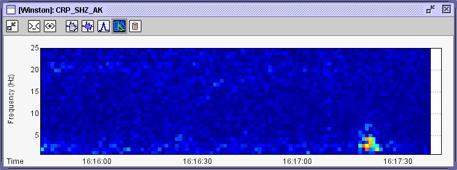

Section V, Real-time Wave Views
Note: this feature of Swarm is likely to undergo significant changes in the next few versions.
User Interface
For viewing the absolute latest available data Swarm includes the Real-time Wave Viewer. Here is a typical Real-time
Wave Viewer showing a just-occurred microquake:

The white area to the right shows the lag between now and the last available data at the time of
refresh (which occurs ever two seconds). You can switch between views of 15, 30, 60, 120 (default), 180, 240, or 300 seconds. The
time displayed is UTC.
Toolbar and Keyboard Interaction
There is toolbar full of buttons at the top of each wave viewer. Here is a description of each button:
 - Minimizes the toolbar, maximizing screen real-estate for the wave.
- Minimizes the toolbar, maximizing screen real-estate for the wave.
 - Decreases number of seconds on the X axis. Keyboard shortcut: Alt-Left arrow
- Decreases number of seconds on the X axis. Keyboard shortcut: Alt-Left arrow
 - Increases number of seconds on the X axis. Keyboard shortcut: Alt-Right arrow
- Increases number of seconds on the X axis. Keyboard shortcut: Alt-Right arrow
 - Opens the Wave View Settings Dialog. Keyboard shortcut: ?
- Opens the Wave View Settings Dialog. Keyboard shortcut: ?
 - Chooses wave view. Keyboard shortcut: W or ,
- Chooses wave view. Keyboard shortcut: W or ,
 - Chooses spectra view. Keyboard shortcut: S or .
- Chooses spectra view. Keyboard shortcut: S or .
 - Chooses spectrogram view. Keyboard shortcut: G or /
- Chooses spectrogram view. Keyboard shortcut: G or /
 - Copies wave view to the Wave Clipboard. Keyboard shortcut: C or Control-C
- Copies wave view to the Wave Clipboard. Keyboard shortcut: C or Control-C
Also, the standard keys for interacting with wave views are active.